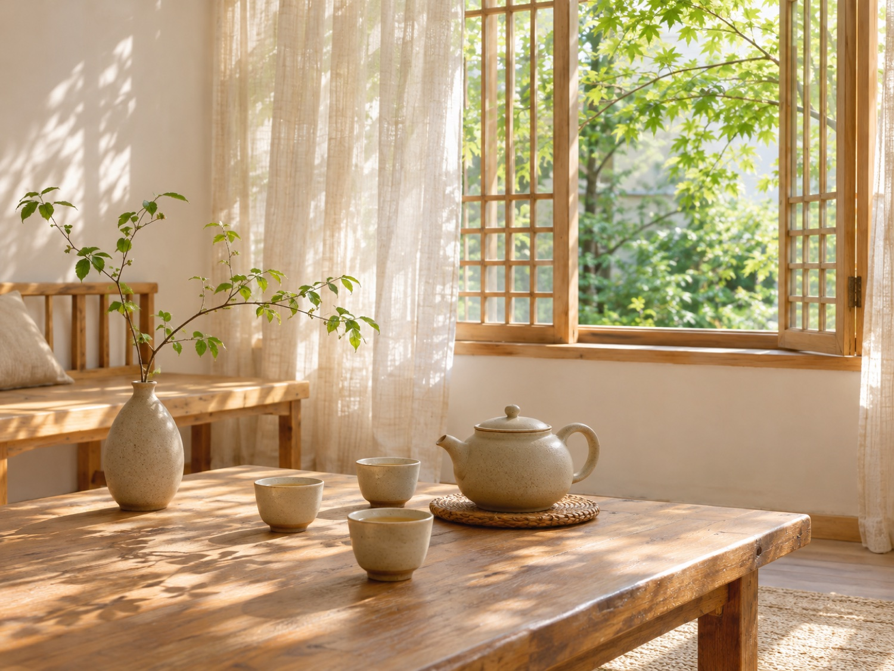

阿毗达磨与生活
从佛教对心与经验的观察出发，探讨如何理解日常生活中的感受与习惯。

AGENDA DU TEMPLE
À PROPOS
报恩寺的网站汇集佛法学习、中文教学与社区活动。你可以在这里浏览课程主题，了解活动形式，并通过行事历查看之后公布的安排。
PROGRAMME
从佛教对心与经验的观察出发，探讨如何理解日常生活中的感受与习惯。
从日常表达、阅读与汉字入手，在学习语言的同时接触中华文化。
ACTIVITÉS
在烛光中静坐，为自己留一段安静的时间。
通过陪伴和交谈，与长者共度一段时光。
在现场音乐中相聚，也在聆听中与彼此交流。
CONTACT
探访地址、开放时间与联络方式待寺院确认后公布。